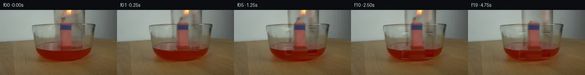

![首帧]()

Round 00
2026-11-05T09:05:37.342079+00:00像素候选变化代码 +308/−0inspection 更新
pixels 7e4873f70c3fda16 · code 007d1c335e9a8b78
查看本轮 generate.py 真实 diff
--- previous/generate.py
+++ current/generate.py
@@ -0,0 +1,308 @@
+#!/usr/bin/env python3
+"""Generate the 20-frame locked-camera continuation from the supplied photograph.
+
+Only local NumPy/Pillow pixel operations and the supplied first frame are used.
+"""
+
+from pathlib import Path
+
+import numpy as np
+from PIL import Image, ImageDraw, ImageFilter, ImageFont
+
+from artifact_io import save
+
+
+ROOT = Path(__file__).resolve().parent
+W, H = 256, 144
+
+
+def smoothstep(value: float) -> float:
+ value = float(np.clip(value, 0.0, 1.0))
+ return value * value * (3.0 - 2.0 * value)
+
+
+def blurred_mask(draw_callback, radius=2.0):
+ """Return a soft 0..1 mask drawn at native resolution."""
+ layer = Image.new("L", (W, H), 0)
+ draw_callback(ImageDraw.Draw(layer))
+ if radius:
+ layer = layer.filter(ImageFilter.GaussianBlur(radius))
+ return np.asarray(layer, dtype=np.float32) / 255.0
+
+
+def alpha_over(frame, color, alpha):
+ """Composite a solid RGB color through a float alpha array."""
+ a = np.clip(alpha, 0.0, 1.0)[..., None]
+ return frame * (1.0 - a) + np.asarray(color, np.float32) * a
+
+
+def vertical_shift_extend(array, pixels):
+ """Shift an HxWxC array down; extend the top row because the jar continues offscreen."""
+ pixels = int(pixels)
+ if pixels <= 0:
+ return array.copy()
+ out = np.empty_like(array)
+ out[:pixels] = array[0:1]
+ out[pixels:] = array[:-pixels]
+ return out
+
+
+def build_clean_plate(source):
+ """Remove the faint original jar locally by horizontal photographic interpolation."""
+ src = source.astype(np.float32)
+ clean = src.copy()
+
+ # Both donor strips are in the same bowl/wall/table rows as the pixels replaced,
+ # so bowl surface, wall and table colors remain continuous across the center.
+ left = src[:, 104:110].mean(axis=1)
+ right = src[:, 183:189].mean(axis=1)
+ interp = np.zeros_like(src)
+ for x in range(W):
+ u = np.clip((x - 108.0) / (184.0 - 108.0), 0.0, 1.0)
+ interp[:, x] = left * (1.0 - u) + right * u
+
+ jar_zone = blurred_mask(
+ lambda d: d.rounded_rectangle((108, -10, 184, 105), radius=9, fill=255),
+ radius=4.0,
+ )
+ clean = clean * (1.0 - jar_zone[..., None]) + interp * jar_zone[..., None]
+ return clean, jar_zone
+
+
+def object_mask():
+ """Soft mask for the stationary match bundle and its dark burned head."""
+ return blurred_mask(
+ lambda d: d.polygon(
+ [(129, 91), (129, 34), (133, 28), (136, 24), (151, 25),
+ (156, 31), (159, 91)],
+ fill=255,
+ ),
+ radius=1.15,
+ )
+
+
+def flame_rgba(source, scale, lateral):
+ """Extract and shrink the photographed flame, anchored at the match head."""
+ scale = float(np.clip(scale, 0.0, 1.0))
+ rgb = np.zeros((H, W, 3), dtype=np.float32)
… diff truncated; 221 more lines …